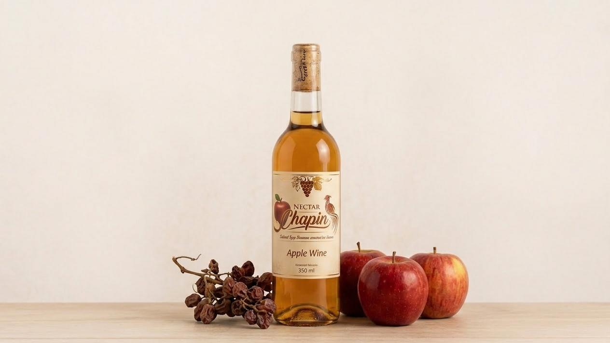
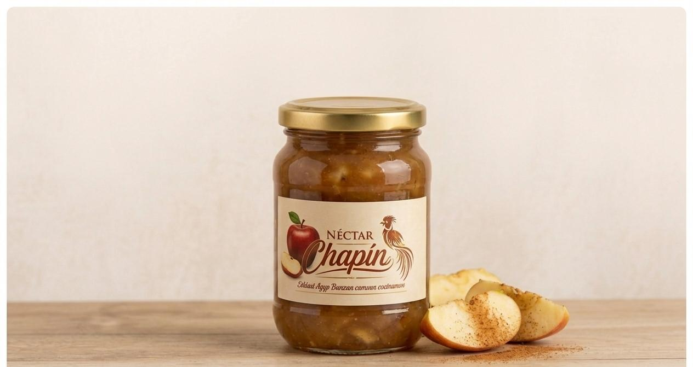
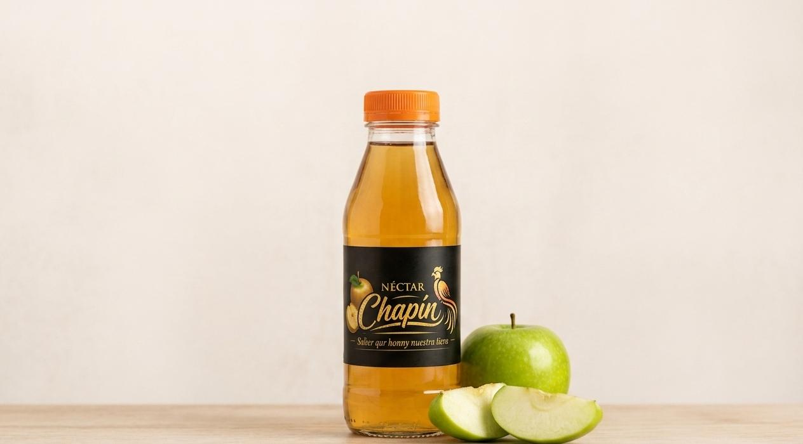
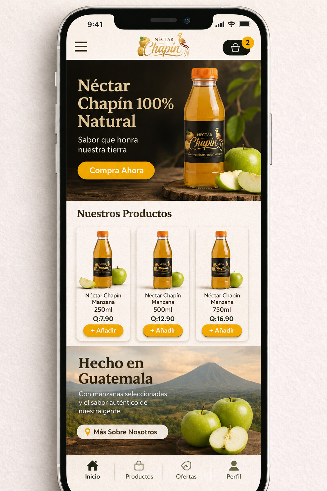

Vino de Manzana
Suave, aromatico y perfecto para compartir en reuniones o celebraciones especiales.
Vino, jugo y jalea de manzana elaborados con identidad local, sabor artesanal y mucho orgullo guatemalteco.

Suave, aromatico y perfecto para compartir en reuniones o celebraciones especiales.

Dulce, espesa y lista para acompanar panes, postres y desayunos familiares.

Refrescante, frutal y elaborado para disfrutar el sabor de la manzana en cada vaso.
Nectar Chapin transforma la manzana en bebidas y conservas que combinan frescura, dulzura y tradicion. Cada producto esta pensado para llevar a tu mesa un detalle natural, cercano y lleno de sabor.
El vino de manzana aporta un toque especial a comidas, brindis y momentos importantes.
ConsultarLa jalea conserva el caracter frutal de la manzana y combina con recetas dulces o saladas.
ConsultarEl jugo es una opcion practica para acompanar almuerzos, refacciones y reuniones.
ConsultarUna marca chapina que celebra el trabajo artesanal y el sabor de nuestra tierra.
ConsultarEstamos preparando una experiencia de pedidos sencilla para que puedas elegir vino, jugo o jalea, consultar disponibilidad y recibir atencion personalizada.
